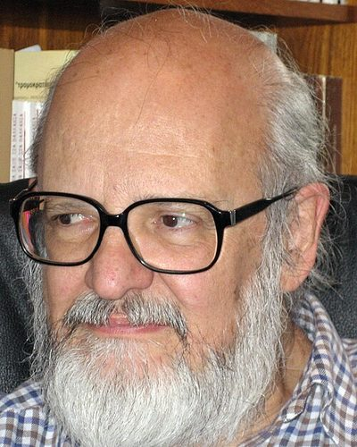

Ideologies / Autonomist
What is Inclusive Democracy?
Inclusive Democracy is a political ideology in the Autonomist family. Fotopoulos traces the present crisis to the concentration of power produced by the market economy and by representative government, and holds that neither social democracy nor state socialism can reverse it. He proposes direct democracy in four fields at once: political, economic, social and ecological. Citizens' assemblies, joined in confederations, would own productive resources and decide how to allocate them, in an economy without a state, money or a market.
Direct democracy extended to politics, the economy, society and nature.
Defined from: Takis Fotopoulos, Towards an Inclusive Democracy (1997)
See how close you are to Inclusive Democracy Dare a friend to answer as one


Where Inclusive Democracy stands on 13 axes
Each axis runs from 0 to 100. A score of 50 is the middle. On a classic compass it sits in the Libertarian Left quadrant.
| Axis | Position | Score | In words |
|---|---|---|---|
| EconomyMarket to Planned | 75 | Strongly Planned | |
| OwnershipPrivate to Collective | 95 | Very strongly Collective | |
| RightsLiberty to Security | 10 | Very strongly Liberty | |
| GovernmentDemocracy to Autocracy | 0 | Very strongly Democracy | |
| StructureDecentralised to Centralised | 5 | Very strongly Decentralised | |
| NationInternationalist to Nationalist | 5 | Very strongly Internationalist | |
| ImmigrationMulticulturalist to Assimilationist | 15 | Very strongly Multiculturalist | |
| ValuesProgressive to Traditional | 15 | Very strongly Progressive | |
| TechnologyAccelerationist to Precautionary | 45 | Balanced | |
| EnvironmentIndustrialist to Environmentalist | 75 | Strongly Environmentalist | |
| ReligionSecular to Religious | 5 | Very strongly Secular | |
| MilitaryPacifist to Militarist | 20 | Strongly Pacifist | |
| TradeFree Trade to Protectionist | 45 | Balanced |
Ideologies closest to Inclusive Democracy
- Anarcho Communism92% alike
- Participatory Economics91% alike
- Democratic Confederalism88% alike
- Social Ecology (Communalism)88% alike
- Ecofeminism87% alike
Its opposite on this map is Kokutai Thought, at 13%.
Parties near Inclusive Democracy
- International Workers' AssociationGermany. The Principles of Revolutionary Syndicalism (1922)87% alike
- Anti Authoritarian InternationalSwitzerland. Resolutions of the Saint Imier Congress (1872)86% alike
- Scottish GreensUnited Kingdom. Let's Demand Better (2026)82% alike
- People Before ProfitUnited Kingdom. Manifesto for Radical Change (2024)82% alike
Common questions
What is Inclusive Democracy?
Inclusive Democracy is a political ideology in the Autonomist family. Fotopoulos traces the present crisis to the concentration of power produced by the market economy and by representative government, and holds that neither social democracy nor state socialism can reverse it. He proposes direct democracy in four fields at once: political, economic, social and ecological. Citizens' assemblies, joined in confederations, would own productive resources and decide how to allocate them, in an economy without a state, money or a market.
What does Inclusive Democracy believe?
In one line: Direct democracy extended to politics, the economy, society and nature. Its strongest positions are Democracy, Collective, Decentralised. Fotopoulos traces the present crisis to the concentration of power produced by the market economy and by representative government, and holds that neither social democracy nor state socialism can reverse it. He proposes direct democracy in four fields at once: political, economic, social and ecological. Citizens' assemblies, joined in confederations, would own productive resources and decide how to allocate them, in an economy without a state, money or a market.
Who founded Inclusive Democracy?
Inclusive Democracy is defined here from Towards an Inclusive Democracy (1997) by Takis Fotopoulos. The thinker most tied to it is Takis Fotopoulos (born 1940).
Is Inclusive Democracy left wing or right wing?
On a classic two axis compass Inclusive Democracy falls in the Libertarian Left quadrant, which means the economic left and the libertarian side. Left and right hide a lot, though, which is why EthosScales scores it on thirteen separate axes.
How is Inclusive Democracy different from Anarcho Communism?
They are close, at a 92% match. The biggest gaps are on Environment, where Inclusive Democracy scores 75 and Anarcho Communism scores 60, and Rights, where Inclusive Democracy scores 10 and Anarcho Communism scores 0. On each axis, 0 is one end and 100 is the other.
Think this is wrong? Suggest a correction. The scores are editorial estimates.